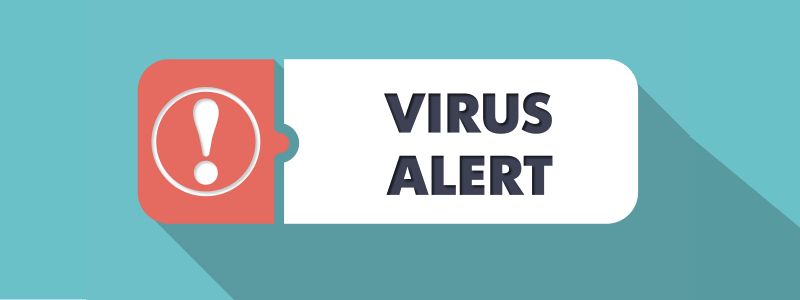
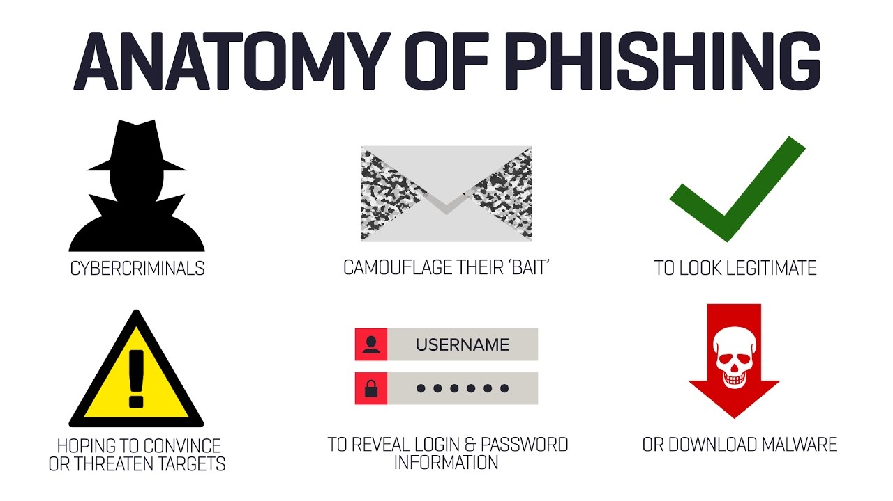
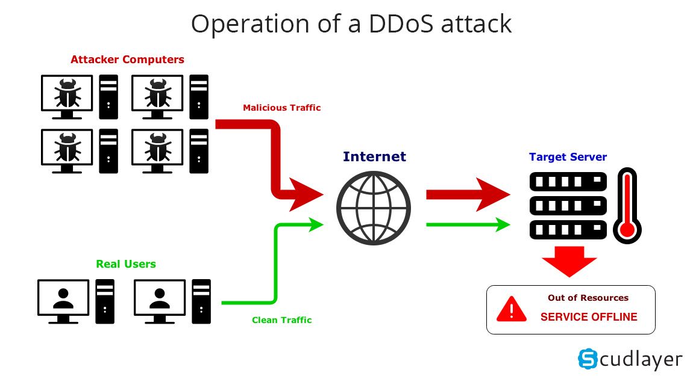
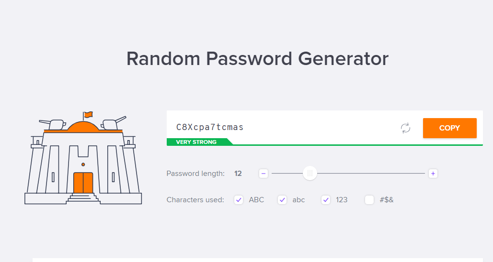
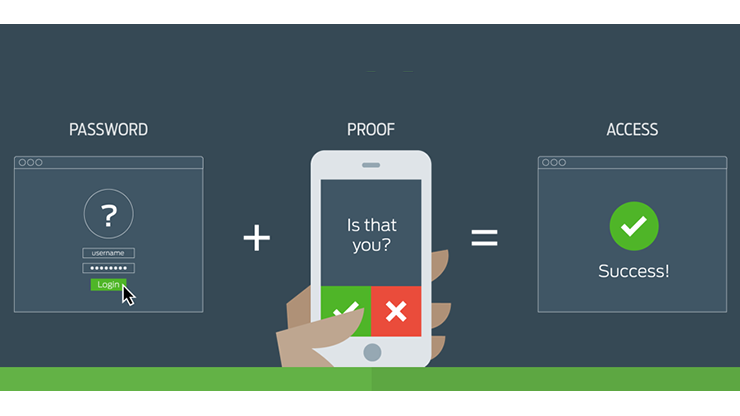

Virus
A virus is a type of malware that gets installed into the computer or becomes a part of a program without the consent of the user. It harms the user and their computer. Viruses exist on the system and will not run unless the user runs or opens an infected program. A virus can remotely access the computer system, steal or delete information and control the programs on the system. A virus can also spread from one computer to others. A virus is injected in a program whose purpose is misleading. For example, people download pirated software (paid software made free) without knowing whether it contains any harmful executable viruses or not. The most common viruses are disguised are regular software updates and pirated software.

Phishing
Phishing is a type of malware scam used by hackers to steal personal information usually disguised as login requests. For example, you may receive an email asking you to login on a website that you have an account on, say your Github account. The link in the mail takes you to a similar website which stores the personal information that you have entered so that hackers can use your account credentials on the actual website.

Distributive Denial of Service (DDoS)
Using malware, hackers can take over a large number of computers connected to many networks and create a cyber army called a Botnet, where each of these computers are known as a bot. A hacker can use these bots to to send a large number of requests to the target website to overwhelm it with more requests that it can handle. This attack is known as a “Distributive Denial of Service”, or simply, a DDoS attack. The term “Distributed” in DDoS refers to the attack from multiple computers to the website all at once. The computers in the server locations cannot handle the requests and stop responding, which means that the DDoS is successful.

Anti-virus software
An anti-virus is program that protects the computer from malware. It scans your computer for malware, finds them and removes them on the spot. The most common and obvious purpose of an anti-virus is to prevent a virus from infecting the computer. Also, some anti-virus software can provide even more protection to your computer from other threats such as - malicious URLs, spam, online privacy, DDoS attacks, etc.

Password Security
Password security is a relationship between length, the number of symbols and the ability to memorise. The password security increases if its length and number of symbols are increased. Its security is greatly increased if the password does not have any patterns (such as birth dates, holidays etc.) as it is more random and harder for hackers to figure out. To have a great level of password security it is ideal to install a safe password manager such as dashlane, 1Password or keepersecurity and save random generated passwords in them. This reduces the number of patterns used between passwords and will be extremely difficult for hackers to decode all passwords.

2FA
Two Factor Authentication is a random generated code or pin sent from a server to your mobile device to confirm your login identity. This adds a layer of protection to your login credentials to so that the account or service being accessed can confirm that it is you who is signing in. This method makes it much harder for a hacker to access your personal details because even if the hacker may know your password, the random generated code is also required to complete the login in process. There are quite a number of 2FA solutions such as - Google Authenticator, Twilio Authy, Duo Mobile, and LastPass Authenticator and the majority of popular password managers all have 2FA by default.

Firewall
A firewall is a system security that protects a private network from unauthorized access. It controls network traffic and allows or blocks specific traffic depending on security rules. They make a barrier between different networks that are trusted and untrusted networks . It can be hardware, software or even both.
Different types of Firewalls:
- Proxy firewall
- Stateful inspection firewall
- Unified threat management (UTM) firewall
- Next-generation firewall (NGFW)
- Threat-focused NGFW

Note: A firewall can be used to protect private information. However, it cannot be used like an anti-malware software because firewalls can only protect network traffic and connections.